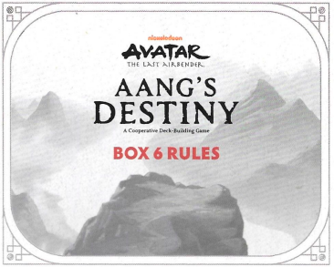
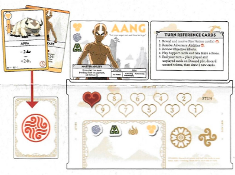
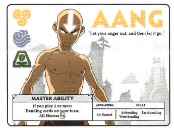

CAIXA 6 REGRAS
OBJETIVO
Como nas Caixas anteriores, derrote todos os
e complete todos os Objetivos antes que a Nação do Fogo chegue ao final do Caminho de Rastreamento.
COMPONENTES DA CAIXA 6
17 CARTAS DE SUPORTE
(Geral, Ar, Água, Terra, Fogo)
5 CARTAS DE RECOMPENSA
5 NOVAS CARTAS DE HABILIDADE MESTRE DE HERÓI
3 CARTAS DA NAÇÃO DO FOGO
2 CARTAS DE ADVERSÁRIO
10 NOVAS CARTAS DE APOIO DE HERÓI INICIAIS ZUKO
8 CARTAS DE OBJETIVO
CONFIGURAÇÃO DA CAIXA 6
Zuko percebeu seu verdadeiro destino de ajudar o Avatar a restaurar o equilíbrio do mundo. Ele agora está disponível como um personagem jogável!
Antes de configurar a Caixa 6, remova quaisquer cartas das Caixas anteriores que não passam para a Caixa 6. Isso inclui: Máscara do Espírito Azul, Jet, Príncipe Zuko, Almirante Zhao, June e Nyla, Duke e Pipsqueak e todas as cartas de Objetivo da Caixa 5.
Caso contrário, siga a mesma configuração da Caixa 5, incluindo revelar 3 cartas.
Certifique-se de ter separado as cartas de Dobra das cartas de Suporte Gerais e as colocado em suas respectivas pilhas antes de embaralhar.
Lembre-se: NÃO EMBARALHE as cartas de Objetivo e Recompensa. Coloque a pilha no Tabuleiro de Jogo e revele o Objetivo 6.1 "SUPERE A MARINHA DE FOGO E A SERPENTE MARINHA".
Para as cartas de Suporte, e , adicione as novas cartas da Caixa 6 às cartas restantes das Caixas 1 a 5 antes de embaralhar.
PREPARE SEU HERÓI
Cada um dos até 4 jogadores pode escolher qualquer um dos 5 Heróis disponíveis e pegar a nova carta de Habilidade Mestre daquele Herói e o baralho de 10 cartas iniciais, juntamente com quaisquer cartas de Recompensa das Caixas 1 a 5 que também sejam cartas iniciais para seu Herói, conforme listado abaixo.
• Aang - 10 cartas iniciais originais mais Estado Avatar e Appa
• Sokka - 10 cartas iniciais originais mais Suki, Espírito da Lua Yue e Pergaminho do Eclipse Solar
• Katara - 10 cartas iniciais originais mais Pergaminho de Dobra de Água e Haru
• Toph - 10 cartas iniciais mais Dobra de Areia e Dobra de Metal
• Zuko - 10 cartas iniciais
Você NÃO começa o jogo com nenhuma das outras cartas de Suporte que adquiriu ao jogar a Caixa 5. Essas cartas devem ter sido devolvidas aos seus baralhos de suprimentos e embaralhadas durante a configuração.
Como nas primeiras 5 Caixas, embaralhe e empilhe suas cartas iniciais de Herói viradas para baixo e, em seguida, compre 5 cartas.

HABILIDADE MESTRE
Cada nova Carta de Herói tem uma Habilidade Mestre. Substitua quaisquer cartas de Herói anteriores pelas novas cartas de Habilidade Mestre durante a configuração.

EXEMPLO
Se você jogar 3 ou mais cartas de Dobra no seu turno, todos os Heróis +1.
Fora das mudanças observadas acima, a jogabilidade e as condições finais do jogo são as mesmas das Caixas 1 a 5.